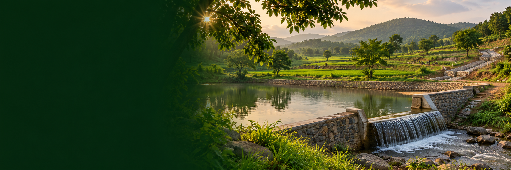

01.
Set CSR Programme Direction
Translate CSR priorities and community needs into programme objectives and delivery plans.
AREA 09 / 09
ESG · CLIMATE · SUSTAINABILITY
Support CSR programmes from strategic direction through partner onboarding, grant review and impact assessment.
My experience spans the CSR programme lifecycle across multi-location portfolios in water, environment, rural development, livelihoods, education, healthcare and community development.
A PRACTICAL FLOW
Translate CSR priorities and community needs into programme objectives and delivery plans.
Review PIA / NGO capability, governance and readiness for programme delivery.
Define consistent processes, indicators and evidence requirements.
Review grant proposals, budgets, milestones and implementation updates.
Track indicator progress against programme targets and reporting periods.
Present programme and KPI progress in a clear visual monitoring view.
Evaluate programme results using available records and stakeholder evidence.
SELECTED EXPERIENCE

CASE STUDY 01 · CSR ADVISORYCSR Advisory & PIA Onboarding for a Community Water ProgrammeVIEW CASE STUDY ↗CASE STUDY 02 · CSR ADVISORYSOP & KPI Development for a Large CSR Water ProgrammeVIEW CASE STUDY ↗CASE STUDY 03 · CSR ADVISORYCSR Grant Review Across a Large Multi-Project PortfolioVIEW CASE STUDY ↗CASE STUDY 04 · CSR ADVISORYImpact Assessment Across a Multi-Thematic CSR PortfolioVIEW CASE STUDY ↗Professional Experience Note This experience reflects my professional contributions to engagements undertaken during my employment with EY. Client identities and engagement-specific information are anonymised and generalised to respect confidentiality and professional obligations. The views presented are personal and do not represent EY or its clients.
← Back to all areas of expertise